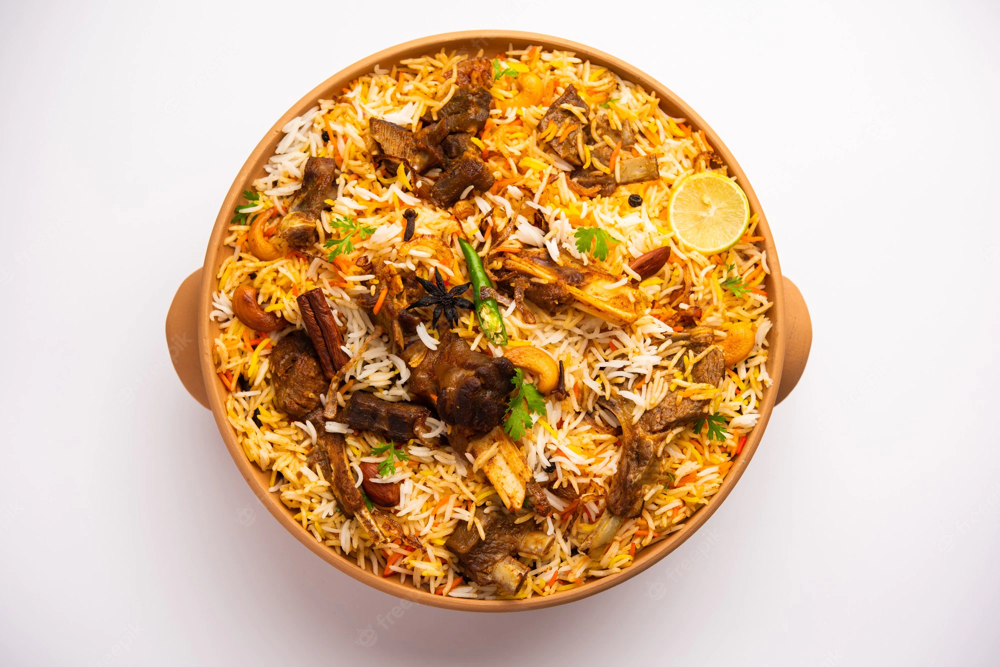

MUTTION BIRIYANI
Ingredients
It has a host of aromatic spices and herbs such as star anise, bay leaves, cardamom, cinnamon, cloves, jaiphal,
and javitri along with chillies, rose water, kewda and saffron cooked with succulent mutton pieces.

Process
The traditional process of Chicken Biryani starts by marinating meat in yogurt along with spices and herbs.
The raw/uncooked marinated meat is layered at the bottom of a wide pot
followed by another layer
of par cooked basmati rice, herbs, saffron infused milk, fried onions and ghee or attar (edible essential oil).
submit for home page: